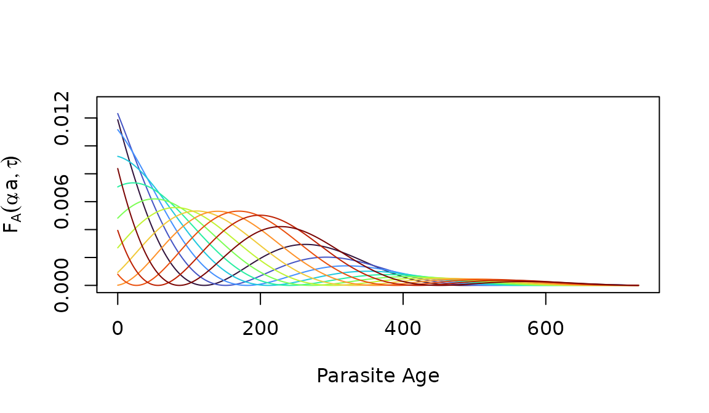
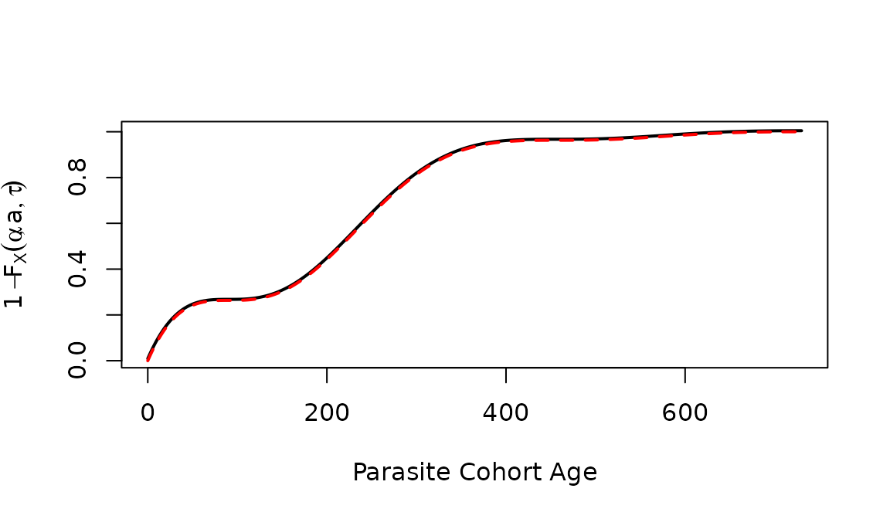
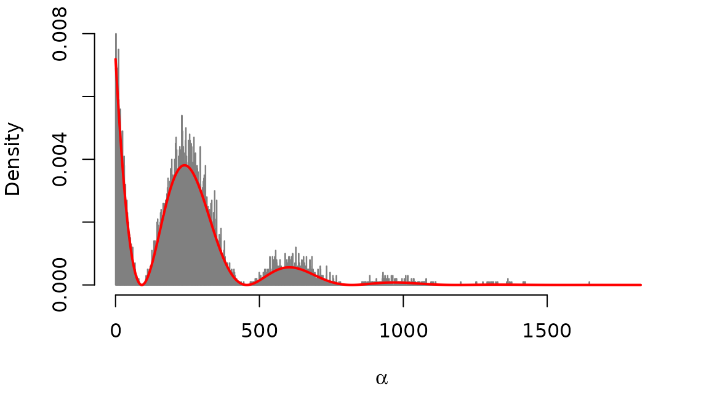
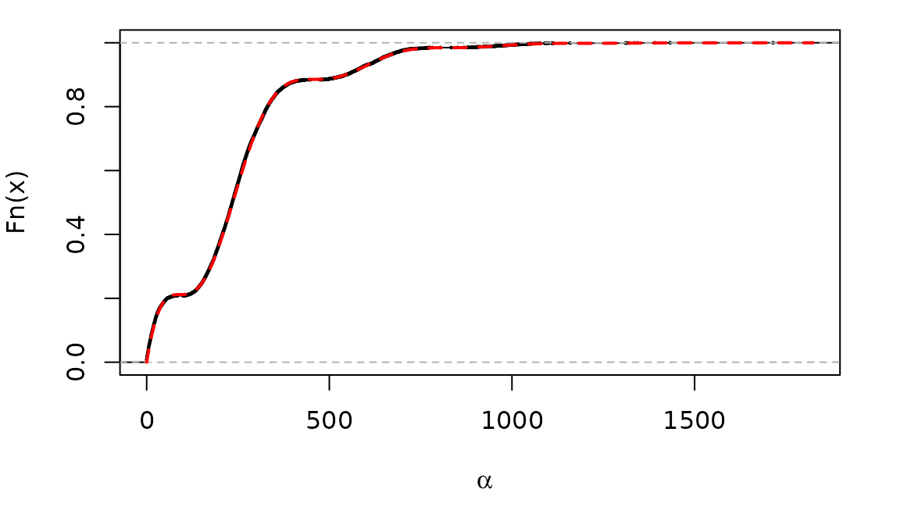
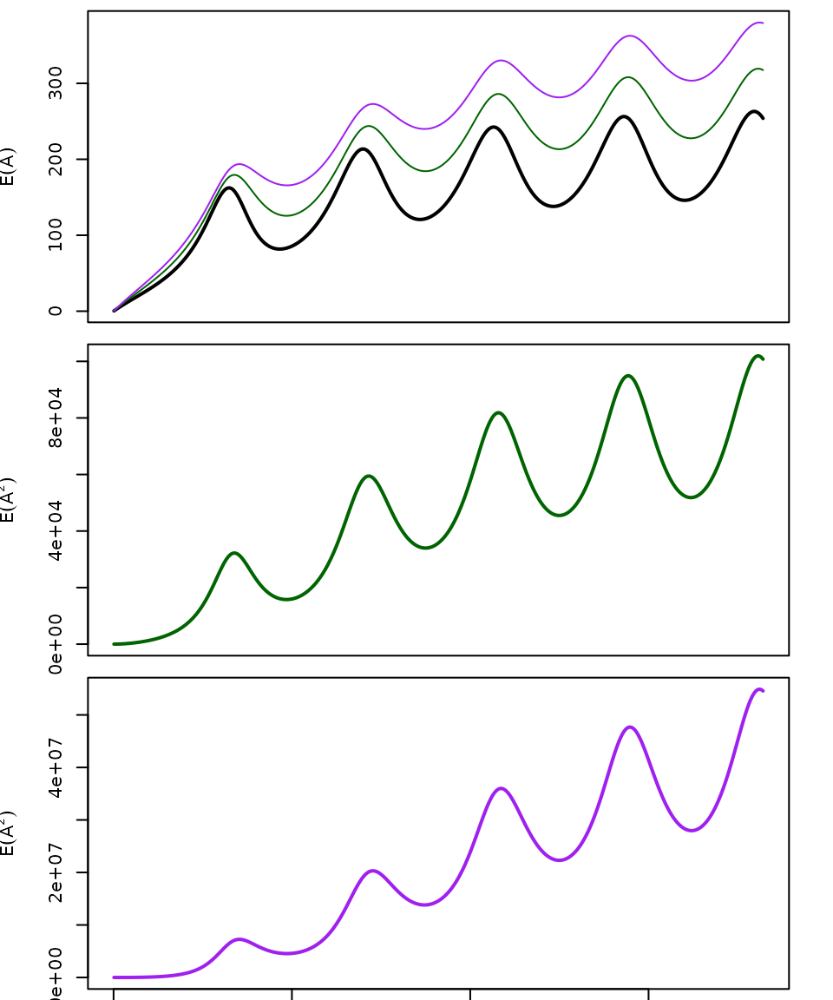

Age of Infection
AoI.RmdSince \(A_\tau(a)\) is a density function and \(m_\tau(a)\) its mass, a PDF for the age of infection is:
\[ A_\tau(a) \sim f_A(\alpha; a, \tau) = \frac{z_\tau(\alpha,a)}{m_\tau(a)} \]
The CDF for \(A_\tau(a)\) is:
\[ F_A(a) \sim \int_0^\alpha f_A(\alpha; a, \tau) d\alpha \]
Functions in pf.memory compute the density, distribution
and random generation for the distribution of \(A_\tau(a)\) for any integrable function
\(h_\tau(a)\)
The Density Function
The following shows what the distribution of the AoI looks like in a cohort of age 2.
plot(a2years, dAoI(a2years, max(a2years), foiP3), type ="l", xlab = "Parasite Age", ylab = expression(F[A](alpha, a, tau)), ylim = c(0,0.009))
Here, we plot the same distributions for 12 cohorts at age 2, each born one month apart.
plot(a2years, dAoI(a2years, max(a2years), foiP3), type = "n", xlab = "Parasite Age", ylab = expression(F[A](alpha, a, tau)), ylim = c(0,0.013))
for(i in 1:12)
lines(a2years, dAoI(a2years,max(a2years),foiP3, tau=30*i), col = clrs[i])
The Distribution Function
plot(a2years, cumsum(dAoI(a2years, max(a2years), foiP3)), type = "l", xlab = "Parasite Cohort Age", ylab = expression(1-F[X](alpha, a, tau)), lwd=2)
lines(a2years, pAoI(a2years, max(a2years), foiP3), col = "red", lwd=2, lty =2)
Random Numbers
par(mar = c(5,4,1,2))
a5years = 0:(5*365)
rhx = rAoI(10000, 5*365, foiP3)
hist(rhx, breaks = c(0:c(5*365)), right=F, probability=T, main = "", xlab = expression(alpha), border = grey(0.5))
cdf1 = pAoI(a5years, 5*365, foiP3)
pdf1 = dAoI(a5years, 5*365, foiP3)
lines(a5years, pdf1, col="red", lwd=2)
par(mar = c(5,4,1,2))
plot(ecdf(rhx), xlim = c(0,1825), cex=0.2, main = "", xlab = expression(alpha))
lines(a5years, cdf1, col = "red", lty = 2, lwd=2)
Moments
Let \(x\) denote the first moment of of \(A_\tau(a)\): \[x_\tau(a) = \left< A_\tau(a) \right> = \int_0^\infty \alpha \frac{z_\tau(\alpha, a)} {m_\tau(a)}\]
Similarly, we let \(x_\tau(a)[n]\) denote the higher order moments of \(A_\tau(a)\): \[x_{n}(a, \tau) = \int_0^\infty \alpha^n \frac{z_\tau(\alpha, a)} {m_\tau(a)}\]
aa = seq(1, 5*365, by = 5)
moment1 = momentAoI(aa, foiP3)
moment2 = momentAoI(aa, foiP3, n=2)
moment3 = momentAoI(aa, foiP3, n=3)The first three moments of the AoY plotted over time. In the top plot, we’ve also plotted the \(n^{th}\) root of the \(n^{th}\) moment.
par(mfrow = c(3,1), mar = c(0.5, 4, 0.5, 2))
plot(aa, moment1, type = "l", xlab = "", ylab = expression(E(A)), lwd=2, xaxt="n", ylim = range((moment3)^(1/3)) )
lines(aa, sqrt(moment2), col = "darkgreen")
lines(aa, (moment3)^(1/3), col = "purple")
plot(aa, moment2, type = "l", xlab = "", ylab = expression(E(A^2)), lwd=2, xaxt="n", col = "darkgreen")
plot(aa, moment3, type = "l", xlab = "", ylab = expression(E(A^2)), lwd=2, col = "purple")
mtext("Age (in Days)", 1, 3)